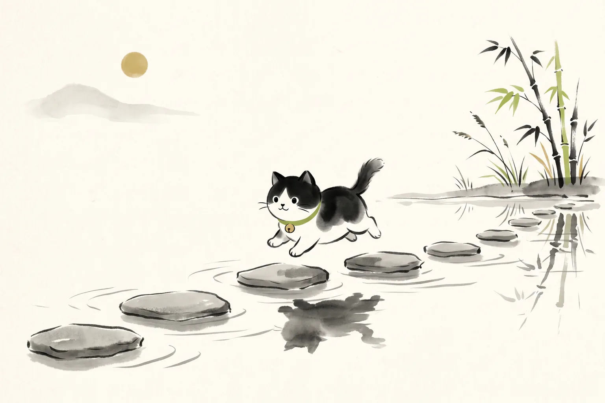

ホーム ＞ 初心者向け7日間講座

無料で詩吟の始め方を7日間で学べます【詩吟メルマガ】
詩吟に興味はあるけれど、何から始めればいいかわからない方へ。発声、練習方法、吟じ方、学び方の順番を、7日間のメールでわかりやすくお届けします。動画や本を見る前に、まずは無料メルマガから始めてみてください。7日目以降は、週2本ペースで、詩吟に関するコラムや、詩吟ポータルの最新情報などをお送りします。（解約はいつでも可）
配信はいつでも解除できます。気軽な気持ちでご登録ください。
7日間の内容プレビュー
毎日1通ずつ、無理なく読める内容をお届けします。届いた順に読んでいただくだけで、詩吟を始める準備が整います。
- Day1詩吟とは何か
- Day2良い吟の聴き方
- Day3近くの教室の探し方
- Day4流派との付き合い方
- Day5漢詩を味わう方法
- Day6自分の吟を録音して練習する方法
- Day7継続するための次の一歩
動画で詩吟を見てみたい方へ
「まずは実際の詩吟を見て・聴いてみたい」という方は、YouTube『詩吟ちゃんねる』からどうぞ。初心者向けの動画もまとめています。
本で体系的に学びたい方へ
じっくり読み進めて学びたい方には、詩吟の教科書シリーズがおすすめです。今のご自身に近いものからどうぞ。
このページにはアフィリエイトリンクが含まれます。
継続して学びたい方へ
無料ツールや動画で学んだあと、継続して学びたい方は、吟ねこコミュニティ（LINEのオープンチャット）や吟猫道場（オンライン詩吟教室）もお気軽にご検討ください。
登録ページで興味のある内容を選べます
登録の際には、興味のある内容を選んでいただけます。選んだ内容に合わせて、届く情報を調整していきますので、気になるものを選んでみてください。
配信はいつでも解除できます。安心してご登録ください。
よくある質問
本当に無料ですか？
はい、無料でご登録いただけます。詩吟の始め方を、より多くの方に知っていただきたいという思いでお届けしています。費用は一切かかりません。
7日間の講座が終わったあとはどうなりますか？
7日間の講座が終わったあとも、詩吟教室マップや吟猫ツールの更新情報、詩吟にまつわるお知らせなどを不定期にお届けします。不要になった場合は、いつでも配信を止めることができます。
配信は解除できますか？
はい、いつでも解除できます。お届けするメールの中に解除の案内を記載していますので、そちらから手続きしていただけます。気軽な気持ちでご登録ください。
どんな人におすすめですか？
詩吟をこれから始めたい方はもちろん、すでに学んでいる方やツールを使ってみたい方、指導する立場の方にもおすすめです。登録時に興味のある内容を選んでいただけるので、ご自身に合った情報が届きます。
最終更新日: 2026年7月11日
運営: heyhey｜YouTube「詩吟ちゃんねる」運営・詩吟歴25年以上・2018年全国コンクール優勝